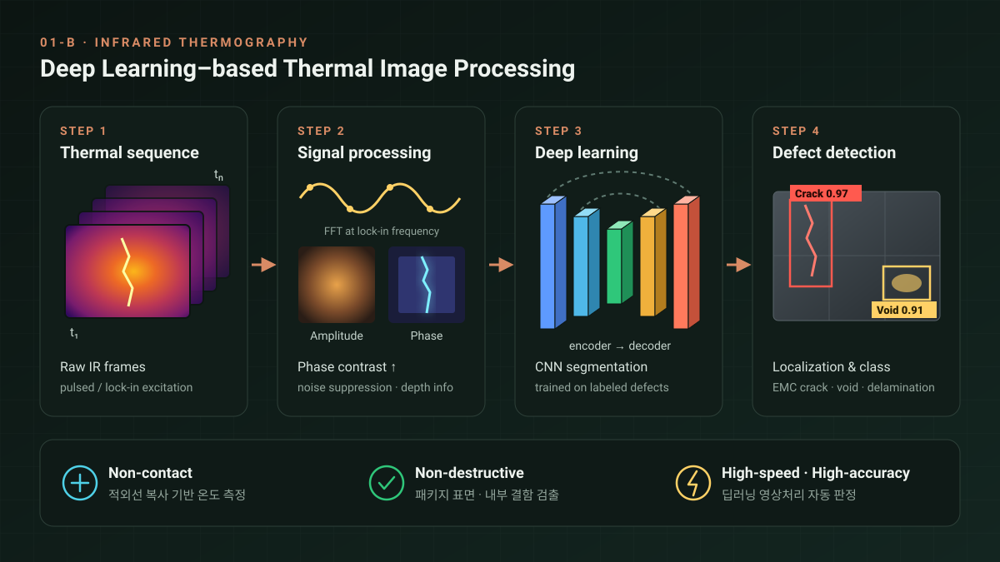

01
INFRARED THERMOGRAPHY-BASED MEASUREMENT AND INSPECTION
적외선 열화상 기반
검사·계측 기술
우리는 적외선 열화상 기술을 활용한 검사 및 계측 연구를 수행합니다. 적외선 열화상 기술은 물체에서 방출되는 복사 열에너지를 기반으로 한 비접촉식 온도 측정 방식으로, 대면적의 온도 분포를 손쉽게 파악할 수 있습니다.
우리 연구실은 이를 응용하여 반도체 패키지 표면 및 내부 결함 검출을 비롯해, thin-film부터 건축물 외벽까지 다양한 대상의 결함을 탐지합니다. 이러한 연구를 통해 비접촉·비파괴 방식으로 고정밀·고속 결함 검사를 구현하는 것을 목표로 합니다.
Epoxy Mold Compound Crack Detection (Pulsed Heating)Advanced Semiconductor Packages (Lock-in Heating)Deep Learning–based Image Processing

